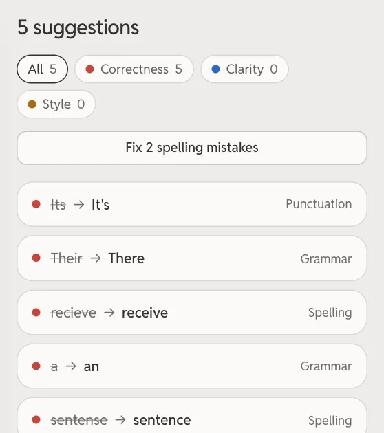
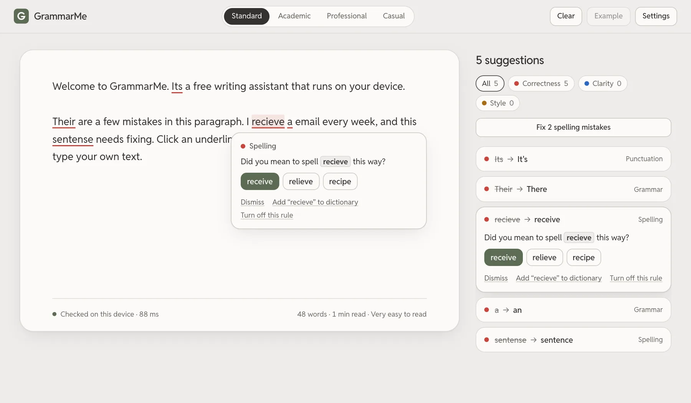
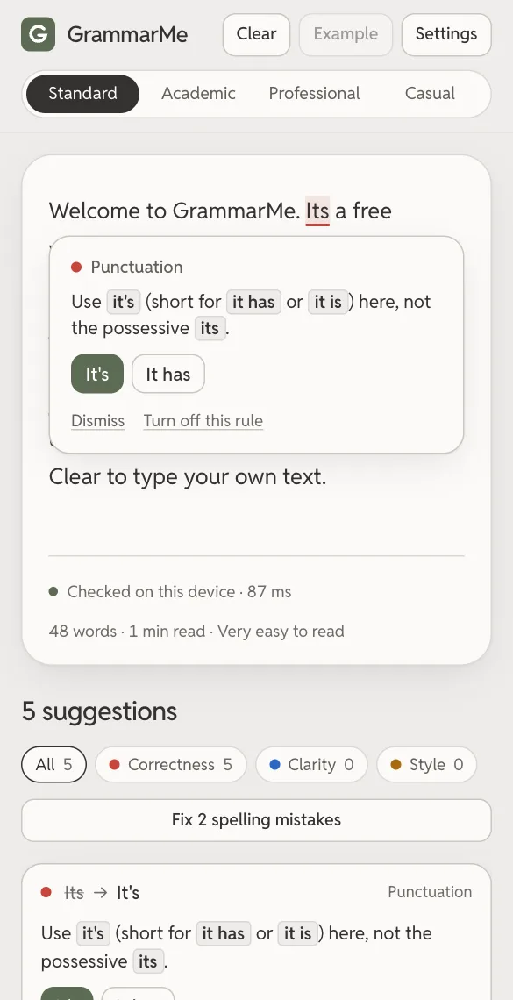
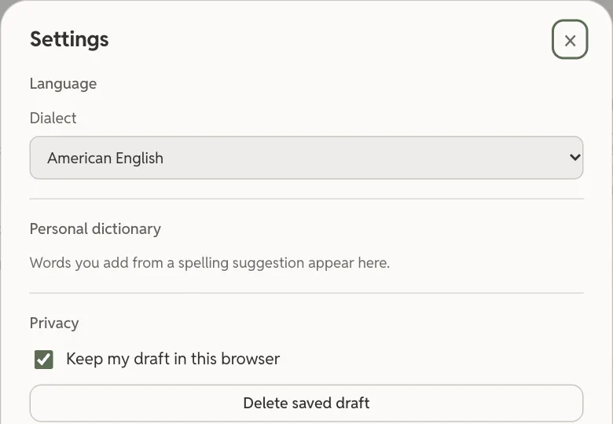
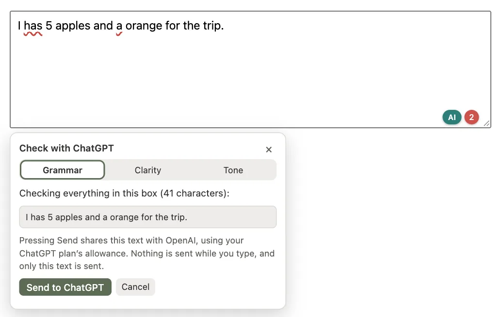
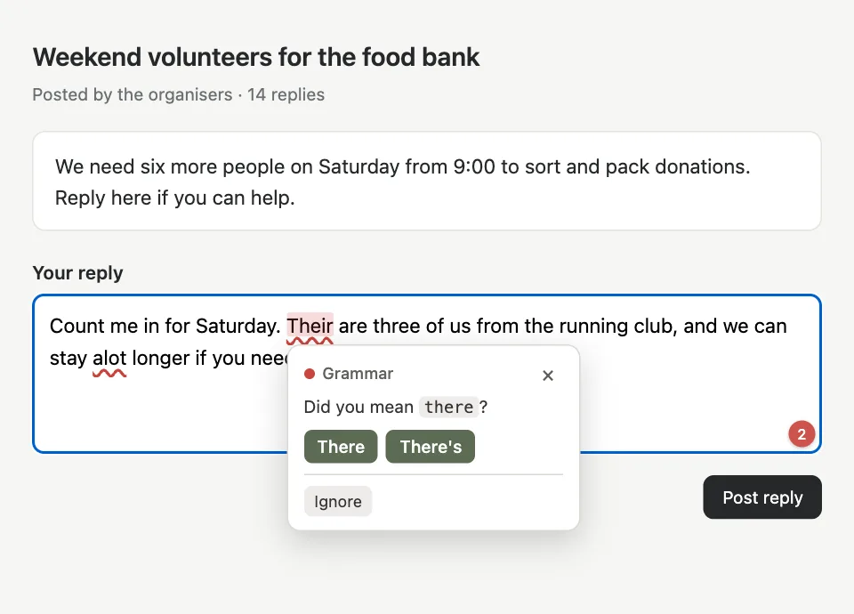

Flags mistakes as you type
Spelling, grammar and punctuation are underlined as you write, each with a reason and a fix you can accept.

Free spelling, grammar, and punctuation checks that run on your device. Review explanations, accept individual fixes, and undo changes. No account required.
Supports American, British, Canadian, Australian, and Indian English


Spelling, grammar and punctuation are underlined as you write, each with a reason and a fix you can accept.

Pick one of five kinds of English, choose a writing mode, and add your own words to the dictionary.

Spelling and grammar checks run on your device. Optional cloud AI sends text only when you enable it and request a check.
In the extension, check text with your own ChatGPT Plus or Pro plan; it needs the free GrammarMe companion on your computer. In the web editor, use your own server. Text is sent only when you request a check. ChatGPT setup · Server setup

Checks supported text fields, including Gmail and Outlook. One checker serves every tab and closes when idle.
Skips password and payment fields. Turns off for any site you choose.
Before you download: for desktop Chrome, Edge and Brave. It installs in Developer mode, and updates are manual: you download each new version yourself.
Google Docs isn't supported by GrammarMe yet.
Optional ChatGPT check: use your own ChatGPT Plus or Pro plan for grammar, clarity and tone edits. It needs the free GrammarMe companion on your computer (macOS or Linux). Setup guide

Yes. Open source under the MIT licence, with no account or paid plan.
On 171 test sentences it found 70% of mistakes, and 84% of its flags were real. See the method
Spelling and grammar checks run on your device. Optional cloud AI sends text only when you enable it and request a check.
American, British, Canadian, Australian and Indian English.
Yes, in the compose box and in Outlook on the web; quoted messages are skipped. Google Docs isn't supported by GrammarMe yet.
Yes, in the extension, with ChatGPT Plus or Pro and the free GrammarMe companion (macOS, Linux). Checks use your plan's allowance; no API key. Setup guide
Once the checker has loaded, you can keep checking text without an internet connection.